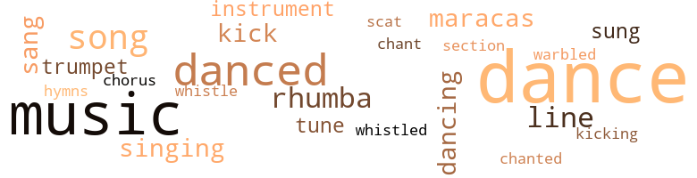
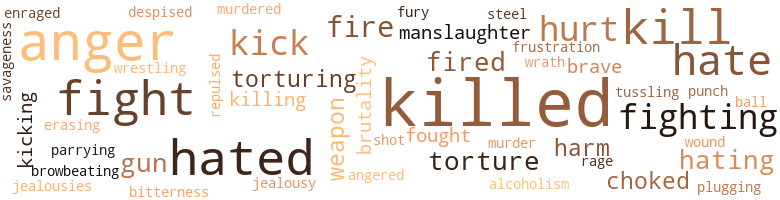
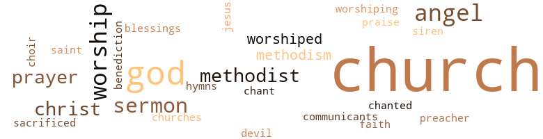

Angel, by Lucas, Curtis (1953)
115 music-related terms matched in this text.
Most frequent terms in this topic: dance (27); music (22); danced (11); dances (8); rhumba (4)
chant.n.01
Definition: a repetitive song in which as many syllables as necessary are assigned to a single tone
| word | sentence |
|---|---|
| chant | The chant ended . |
chorus.n.01
Definition: any utterance produced simultaneously by a group
| word | sentence |
|---|---|
| chorus | They answered her in a chorus . |
cornet.n.01
Definition: a brass musical instrument with a brilliant tone; has a narrow tube and a flared bell and is played by means of valves
| word | sentence |
|---|---|
| trumpet | From high up in the choir loft she heard the singing : My Lord - He calls me , He calls me by the thunder , The trumpet sounds within my soul . . . She though of all her cruel and ruthless ways - all her capacity for hurting people , for spoiling all the warmth and generosity of others . |
| trumpet | Green trees are bending , Poor sinners stand a-trembling , The trumpet sounds within my soul . . . She moved from her pew and walked down the aisle with the overpowering mass of emotions churning within her . |
dance.n.01
Definition: an artistic form of nonverbal communication
| word | sentence |
|---|---|
| dance | He could go back to the dance where his friends stood in a corner talking about football . |
| dance | " You see , " he said quickly , " I was to a dance , and one of the fellows had a bottle , and - and I 'm not used to drinking . " |
| dances | And you 'd better start drinking punch when you go to dances . " |
| dance | But that night at the dance , after the football game , he offered her a ride in his car , and she went willingly . |
| dances | This girl , Rida Malloy - did n't he take her to dances and movies ? |
| dance | Back in the now-dimming recesses of his memory , Eddie Carboni remembered Alice Caldwell , remembered how she had stood there , that night at the dance , holding her hands , her face white , her lips set so stiff to keep from trembling . |
| dances | This girl , Rida Malloy - did n't he take her to dances and movies ? |
| dance | Back in the now-dimming recesses of his memory , Eddie Carboni remembered Alice Caldwell , remembered how she had stood there , that night at the dance , holding her hands , her face white , her lips set so stiff to keep from trembling . |
| dances | He thought of the way he had seen her at dances this last year . |
| dance | There was a dance later that night to celebrate University 's third untied , undefeated year . |
| dances | There would be petting and long walks into the night , and afterward there would be the automobiles and the other things that went with college students ' dances . |
| dance | He was impatient for the beginning of the dance . |
| dances | He had learned that Duke went to high school dances with a girl named Rida Malloy ; he had made sure that Rida was a good girl , that she went to the African Methodist Church with Duke . |
| dance | " Let 's dance , Alice , " Duke said . |
| dance | " I was beginning to wonder whether this was going to be a dance or a drag . " |
| dance | " Let 's dance , " she said simply . |
| dance | It was a dance of shoulders and breasts and hips and legs . |
| dance | The soft lights caught each provocative shift as they slithered through the sinuous dance . |
| dances | But also she would be friendly and good and modern - she would like dances and games and parties . |
| dances | Remember the dances at University , when they used to play that and we used to dance ? |
| dance | " Come on , let 's dance . |
| dance | There 's a formal dance tonight , and I promised to take her . " |
| dance | " Let 's just dance , " she told him . |
| dance | They finished the dance in silence . |
| dance | She knew that at the dance couples still moved about on the floor , whispering , clinging to one another , while the silken rustle of many dresses lent magic to the evening . |
| dance | She knew that , back at the dance , Duke Bolden stood tall among the football players . |
| dance | And now and then , from a long way off , he could hear the whispering sound of music coming faintly - ever so faintly - from the dance . |
| dance | But the dance - and the game before the dance - seemed a thousand years away . |
| dance | But the dance - and the game before the dance - seemed a thousand years away . |
dance.v.02
Definition: move in a pattern; usually to musical accompaniment; do or perform a dance
| word | sentence |
|---|---|
| dancing | A while back she had been dancing with him . |
dance.v.03
Definition: skip, leap, or move up and down or sideways
| word | sentence |
|---|---|
| dancing | Fred Veek hated the colored boy most when he saw him dancing with the girl whom he - Fred Veek - had once taken at will , but whom he could no longer have . |
| dancing | Why not make her stop dancing with Duke Bolden , the colored boy whom he hated . |
| danced | They danced close to each other , they danced apart , circling one another , turning around and around . |
| danced | They danced close to each other , they danced apart , circling one another , turning around and around . |
| danced | They turned side by side , they danced face to face and back to back ; they went up and down the floor , following the rhumba beat , while other couples turned to watch . |
| danced | She danced with her head held back , watching him . |
| danced | He said nothing , just looked at her as she danced . |
| danced | CHAPTER III Fred Veek stood alone , watching Alice as she danced with the tall colored boy . |
| dance | Remember the dances at University , when they used to play that and we used to dance ? |
| dance | Let 's dance the way we used to at University . " |
| dance | I want to dance , Duke . |
| dance | I came all the way to town to dance with you . |
| dance | Let 's teach these kids how to dance . " |
| danced | CHAPTER IV On the floor she rested one hand on Fred Veek 's shoulder as they danced . |
| danced | He watched the girl as they danced . |
| danced | He held her so tightly that he could feel her knees strike against his as they danced , that her stomach was against his , and her breasts pressed at his chest . |
| dance | Why do n't you dance with me and let that bunch of kids go on telling their dirty jokes ? " |
| danced | They danced several times , and he noticed that she had changed perceptibly . |
| danced | Then she had danced with Fred Veek . |
hymn.n.01
Definition: a song of praise (to God or to a saint or to a nation)
| word | sentence |
|---|---|
| hymns | There were two or three storefronts used as churches , where hymns were being sung . |
kick.v.04
Definition: kick a leg up
| word | sentence |
|---|---|
| kick | " If you do n't , " he said , and his voice was ruthless , " if you do n't , I 'll kick you out ! " |
| kick | He was rich and powerful and ruthless , and he could kick her out and get away with it . |
| kick | All she thought of was how she had triumphed over the cruel man who was going to kick her out of town . |
| kicking | Her long legs thrashed about , her feet scuffed at the floor of the car , kicking the whiskey bottle again . |
maraca.n.01
Definition: a percussion instrument consisting of a hollow gourd containing pebbles or beans; often played in pairs
| word | sentence |
|---|---|
| maracas | Alice , caught in the magic of the bongas and the mad , cackling laughter of the maracas , lost herself in the dance steps . |
| maracas | Alice laughed , and the maracas giggled . |
| maracas | The rustle of silk on the dance floor was like whispering shadows , and the crackling maracas gave out all their sprite-like sibi-lance . |
music.n.01
Definition: an artistic form of auditory communication incorporating instrumental or vocal tones in a structured and continuous manner
| word | sentence |
|---|---|
| music | She went slowly toward the faint sound of music which came from the dance hall . |
| music | " Do you like music ? " she asked . |
| music | The music came suddenly from the radio , a thick male voice shouting , " Lem me go ho-o-ome , whiskey . |
| music | She played an endless procession of records , some hit tunes and some collector 's items ; she played jazz music , bop , Afro-Cuban numbers , calypso songs with British West Indies accents , tangos , and folk songs . |
| music | The music wafted hotly from the record machine while she sent spirals of smoke upward , filling the room . |
| music | The record player went on and on , filling the room with hot , wild music . |
| music | She ate slowly , listening to the record player , tapping her foot to the beat of jazz music . |
| music | She turned when she reached the neon lights , heard the loud music from the nickel machine before she entered the door . |
| music | But there was no peace for her in the soothing music , nothing to lull her unrest , nothing to quiet the straining agitation within her soul . |
| music | And for a while the music and the silky rustling washed over them . |
| music | The music ended with frightening abruptness , leaving couples in the middle of body shifts . |
| music | They went into the church , and the organ played its soft music , and quiet came over the congregation . |
| music | She lay there , breathing , listening to the music . |
| music | Now she worked her leg to the music , moving it back and forth . |
| music | For a while they listened to the music . |
| music | Record after record dropped , and the jazz music filled the room . |
| music | They walked out into the night , and the music from the band followed them . |
| music | Fred Veek turned on the radio , and they listened to the music . |
| music | " But I want to hear the music , " she protested . |
| music | They sat there and listened to the music . |
| music | And now and then , from a long way off , he could hear the whispering sound of music coming faintly - ever so faintly - from the dance . |
| music | Tn the front seat the still form remained in the gloominess of death , motion ; less there , with eyes unblinking , while the far music from the dance hall went unheard . |
musical_instrument.n.01
Definition: any of various devices or contrivances that can be used to produce musical tones or sounds
| word | sentence |
|---|---|
| instrument | All the while she thought of the night before , knowing that she would have killed the man if she had had any suitable kind of instrument . |
| instruments | She was working a telephone switchboard , plugging in instruments , taking them out , talking in a pleasant , business-like tone of voice . |
rumba.n.01
Definition: syncopated music in duple time for dancing the rumba
| word | sentence |
|---|---|
| rhumba | The band started playing a rhumba . |
| rhumba | He raised her hand , holding it just above her head , and she went around in a beautiful slow rhumba gait . |
| rhumba | They turned side by side , they danced face to face and back to back ; they went up and down the floor , following the rhumba beat , while other couples turned to watch . |
| rhumba | She went before him toward a small bench , and the way she walked was like a rhumba , only it was softer and more sinuous . |
scat.n.01
Definition: singing jazz; the singer substitutes nonsense syllables for the words of the song and tries to sound like a musical instrument
| word | sentence |
|---|---|
| scat | " I do n't see why they do n't take them up , " Alice said , speaking from the back scat . |
section.n.01
Definition: a self-contained part of a larger composition (written or musical)
| word | sentence |
|---|---|
| section | Turning into a little side street in the factory section of the city , he drove halfway down the block and parked near a gnarled old tree which stood leafless and ugly in the November bleakness . |
sing.v.02
Definition: produce tones with the voice
| word | sentence |
|---|---|
| sung | There were two or three storefronts used as churches , where hymns were being sung . |
| sung | Which one of these had Duke sung in ? |
| sang | We went to Sunday School and church together , and we sang in the junior choir and all that . " |
| sang | The choirs sang their songs , and the Steward raised his voice in prayer . |
| sang | The record player was on , Burl Ives sang : There was a lady from the town , Low , so low , so lonely , She walked her up , and she walked her down , Down by the greenwood sidey , First she leaned upon an oak - First it bent , and then it broke - The Shop Steward went into the foremen 's shanty . |
singing.n.01
Definition: the act of singing vocal music
| word | sentence |
|---|---|
| singing | One of the choirs was singing . |
| singing | From high up in the choir loft she heard the singing : My Lord - He calls me , He calls me by the thunder , The trumpet sounds within my soul . . . She though of all her cruel and ruthless ways - all her capacity for hurting people , for spoiling all the warmth and generosity of others . |
| singing | Alice sat on the davenport , singing with Nat Cole 's record . |
song.n.01
Definition: a short musical composition with words
| word | sentence |
|---|---|
| songs | She played an endless procession of records , some hit tunes and some collector 's items ; she played jazz music , bop , Afro-Cuban numbers , calypso songs with British West Indies accents , tangos , and folk songs . |
| songs | She played an endless procession of records , some hit tunes and some collector 's items ; she played jazz music , bop , Afro-Cuban numbers , calypso songs with British West Indies accents , tangos , and folk songs . |
| song | She made a slow , lazy business of bathing , leaving the bathroom door open so that she could hear snatches of song above the splashing . |
| songs | The choirs sang their songs , and the Steward raised his voice in prayer . |
| songs | She got up and went to the record player , removing the Nat Cole records and loading the turntable with folk songs by Burl Ives . |
| song | She hummed lightly , with the song : There was a lady from the town , Low , so low , so lonely , She walked her up , and she walked her down , Down by the greenwood sidey , First she leaned upon an oak - First it bent , and then it broke - She snapped off the machine and stood up . |
tone.v.01
Definition: utter monotonously and repetitively and rhythmically
| word | sentence |
|---|---|
| chanted | Alice bowed her head and chanted the prayer with the others . |
tune.n.01
Definition: a succession of notes forming a distinctive sequence
| word | sentence |
|---|---|
| tune | She hummed a tune to herself , and the taxi slid on through the night . |
| tunes | She played an endless procession of records , some hit tunes and some collector 's items ; she played jazz music , bop , Afro-Cuban numbers , calypso songs with British West Indies accents , tangos , and folk songs . |
| lines | The woman next to her held a Bible to Alice , pointing with one stubby finger to the lines the minister was reading . |
| line | Duke kept his place in line . |
| line | She would watch the highway until a long line of trucks came speeding along . |
| line | Behind this truck came two more , all in line . |
whistle.v.01
Definition: make whistling sounds
| word | sentence |
|---|---|
| whistled | Some of them whistled at her . |
| whistle | In the laborers ' shanty he dressed without a word ; when the whistle blew he went out with the others . |
yodel.v.01
Definition: sing by changing register; sing by yodeling
| word | sentence |
|---|---|
| warbled | She was silent , and the record player warbled . |
193 violence-related terms matched in this text.
Most frequent terms in this topic: killed (29); anger (18); hated (15); fight (14); kill (14)
alcoholism.n.01
Definition: habitual intoxication; prolonged and excessive intake of alcoholic drinks leading to a breakdown in health and an addiction to alcohol such that abrupt deprivation leads to severe withdrawal symptoms
| word | sentence |
|---|---|
| alcoholism | He shook his head a little sadly , realizing that he was nearing fifty , that he was a long way down the road to alcoholism , and that he was full of an old man 's lustful ways . |
anger.n.01
Definition: a strong emotion; a feeling that is oriented toward some real or supposed grievance
| word | sentence |
|---|---|
| anger | She stood there digging the fingernails of her right hand into her left palm , wild , helpless rage knifing through her and leaving her weak with anger . |
| anger | In her anger she walked faster , knowing that he was watching her . |
| anger | But even in anger she had that something about her - the hips , the long legs , the flowing motions of her body . |
| anger | Her lips were pressed tightly together , and cruel ; but a slight twitching at one corner of her mouth re - vealed her nervousness and anger . |
| anger | " No , " she said , fighting the anger back , trying to control the twitching at the corner of her mouth . |
| anger | Try as he would , he could hardly keep the anger out of his voice . |
| anger | He leaned forward , looking at her , no longer trying to hide his impatience and anger . |
| anger | The anger left his face . |
| anger | His eyes were rapidly clouding , and the warm flush of rising anger was in ' his face . |
| anger | They regretted that in one moment of anger he had thrown away so much . |
| anger | " Yes , sir I " the attendant said , blissfully ignorant of the white man 's anger . |
| anger | " The son of a bitch ! " he said , the surprise and the anger deep inside him . |
| anger | His face was flushed brick-red , his eyes half closed and smoky with anger . |
| anger | " You - " he started in anger , and then he checked himself . |
| anger | The idea , he thought , was to shock and insult her , to anger her , but not to drive her away from him . |
| anger | All the anger and frustration welled up in him , and he moved . |
| anger | After a long time he slowed down , his anger slowly simmering . |
| anger | Then he thought of Duke Bolden and scowled darkly , knowing that his anger should be turned toward the colored athlete and regretting the fact that he could do nothing . |
anger.v.02
Definition: become angry
| word | sentence |
|---|---|
| angered | He had a way of smiling at her - a way that angered her . |
contemn.v.01
Definition: look down on with disdain
| word | sentence |
|---|---|
| despised | As if she despised the others , especially the girls . |
enrage.v.01
Definition: put into a rage; make violently angry
| word | sentence |
|---|---|
| enraged | The smile was still on the bulky man 's lips , and his greedy , insinuating eyes enraged her . |
erase.v.01
Definition: remove from memory or existence
| word | sentence |
|---|---|
| erasing | And , smartly , she bent over , raising her skirt and wiping the bottle carefully , erasing prints . |
ferociousness.n.01
Definition: the trait of extreme cruelty
| word | sentence |
|---|---|
| brutality | He had confessed the deed without any show of emotion , had told the police everything without coercion or any threat of brutality . |
| brutality | He had confessed the deed without any show of emotion , had told the police everything without coercion or any threat of brutality . |
fight.n.02
Definition: the act of fighting; any contest or struggle
| word | sentence |
|---|---|
| fighting | And he realized that she was not going to allow herself to be taken this time , that she was going to fight him all the way and enjoy the fighting . |
fight.n.05
Definition: a boxing or wrestling match
| word | sentence |
|---|---|
| fight | " This Fred Veek , you ever have a fight with him before ? " |
| fight | " This Fred Veek , you ever have a fight with him before ? " |
| fight | He do n't know how much fight I had to put up to get him into University . |
| fight | The fight had been hard , and he had won . |
fight.v.02
Definition: fight against or resist strongly
| word | sentence |
|---|---|
| fighting | Then he - he started calling you names , and you started fighting . |
| fight | Then he saw the young , thin-faced patrolman coming across the street , and he had to fight down the panic that caught him . |
| fighting | After a while they had started fighting in the car . |
| fight | " Did you ever want to fight him before ? " |
| fight | " What made you fight him that time ? " |
| fight | Did he ever want to fight on a football field ? |
| fought | But when he bent her backward on the seat of the car she fought him . |
| fighting | I was drunk and we were fighting and I killed him . |
| fighting | After a while they had started fighting in the car . |
| fight | " Did you ever want to fight him before ? " |
| fight | " What made you fight him that time ? " |
| fight | Did he ever want to fight on a football field ? |
| fighting | I was drunk and we were fighting and I killed him . |
| fighting | " No , " she said , fighting the anger back , trying to control the twitching at the corner of her mouth . |
| fought | Here was an untold story of black men who recognized and fought evil together , even though retarded by their own lack of learning , their own jealousies and hates . |
| fight | She could fight as hard as he could . |
| fight | And he realized that she was not going to allow herself to be taken this time , that she was going to fight him all the way and enjoy the fighting . |
| fight | When the boys had parted them they had done Fred Veek a favor , for the colored boy surely would have beaten him had they been allowed to fight it out . |
frustration.n.03
Definition: a feeling of annoyance at being hindered or criticized
| word | sentence |
|---|---|
| frustration | All the anger and frustration welled up in him , and he moved . |
fury.n.01
Definition: a feeling of intense anger
| word | sentence |
|---|---|
| rage | She stood there digging the fingernails of her right hand into her left palm , wild , helpless rage knifing through her and leaving her weak with anger . |
| fury | Then the fury worked its way onto his face . |
gag.v.06
Definition: cause to retch or choke
| word | sentence |
|---|---|
| choked | He sputtered and choked , and water came to his eyes . |
| choked | If they stepped on the gas with the hand brakes on , the motor choked . |
| choked | " Listen , " she said , her words , choked as they were , still coming fast , " listen , Duke . |
gun.n.01
Definition: a weapon that discharges a missile at high velocity (especially from a metal tube or barrel)
| word | sentence |
|---|---|
| gun | He took his hand off the car door and let it hover near his gun . |
| gun | He caught at his gun swiftly , pulled it free of its holster . |
| gun | Yet there was something about Howard Cannon that was like gun steel . |
| gun | Then we 'd put it in tanks and pump oxygen in behind it and stick it into the gun turrets . |
harm.v.01
Definition: cause or do harm to
| word | sentence |
|---|---|
| harm | Just do n't keep that boy in prison long enough to harm him . " |
hate.n.01
Definition: the emotion of intense dislike; a feeling of dislike so strong that it demands action
| word | sentence |
|---|---|
| hate | They saw the pleasure she took in torturing the football players by openly flirting with Fred Veek , while they looked helplessly on with hate in their eyes . |
| hate | He saw how she took in the flashes of hate in the boys ' eyes . |
hate.v.01
Definition: dislike intensely; feel antipathy or aversion towards
| word | sentence |
|---|---|
| hated | Three years of a colored boy whom he hated . |
| hate | Alice had no love for him , she had no concern for him ; in fact she seemed to hate him . |
| hate | She seemed to hate him . |
| hated | In a little while she would be out on the dance floor doing crazy dance steps with Duke Bolden , whom Fred Veek hated . |
| hated | Fred Veek hated the colored boy most when he saw him dancing with the girl whom he - Fred Veek - had once taken at will , but whom he could no longer have . |
| hated | Why not make her stop dancing with Duke Bolden , the colored boy whom he hated . |
| hated | Always male students flocked around her , and the female students at University hated her for it . |
| hated | There were times , especially around five in the afternoon , when he acted as if he hated to leave the office . |
| hated | He knew it was time for her to get off , but he acted as if he hated to see her leave . |
| hated | He hated to see her go . |
| hate | " I hate to keep detaining you all the time when everybody else is going home . |
| hates | Here was an untold story of black men who recognized and fought evil together , even though retarded by their own lack of learning , their own jealousies and hates . |
| hating | Nor did he tell them how the guards had shoved him around , how he had taken it , hating their guts all the while . |
| hate | He must hate me . |
| hate | I hate your guts . " |
| hating | In addition to hating Duke , York now knew that the tall boy worried him . |
| hate | I hate that house , Duke . |
| hating | Then , before you knew it you 'd be hating me , and I 'd be hating you . " |
| hating | Then , before you knew it you 'd be hating me , and I 'd be hating you . " |
| Hate | Hate and hurt and contempt were in their eyes . |
| hated | He hated to open the letters . |
| hated | She hated him then . |
| hated | She hated his sight . |
| hated | She hated the bigness of him , his age , his white hair , and the steel guts inside him . |
| hated | He hated Negroes , and he had not wanted Duke Bolden on his football team . |
| Hate | Hate the boy though Fred Veek did , he still had to use him , had to build plays around him . |
| hated | But they liked Duke Bolden , and they hated Fred Veek . |
| hated | Even though he was their coach - even though they played winning football under him - they still hated him . |
injury.n.01
Definition: any physical damage to the body caused by violence or accident or fracture etc.
| word | sentence |
|---|---|
| harm | " No harm , " he said . |
| hurt | For a moment she could see the hurt and pain in the colored boy 's eyes , and she knew her words had shocked him . |
| harm | And she understood the great harm she had done to the boy . |
| hurt | She had a great capacity for love and hurt and suffering . |
| hurt | The hurt showed on her face . |
| hurt | But the misery and the hurt was there in his eyes . |
jealousy.n.01
Definition: a feeling of jealous envy (especially of a rival)
| word | sentence |
|---|---|
| jealousies | Here was an untold story of black men who recognized and fought evil together , even though retarded by their own lack of learning , their own jealousies and hates . |
| jealousy | He noticed the close harmony between the two dancers , and jealousy burned within him . |
kick.v.04
Definition: kick a leg up
| word | sentence |
|---|---|
| kick | " If you do n't , " he said , and his voice was ruthless , " if you do n't , I 'll kick you out ! " |
| kick | He was rich and powerful and ruthless , and he could kick her out and get away with it . |
| kick | All she thought of was how she had triumphed over the cruel man who was going to kick her out of town . |
| kicking | Her long legs thrashed about , her feet scuffed at the floor of the car , kicking the whiskey bottle again . |
kick_back.v.02
Definition: spring back, as from a forceful thrust
| word | sentence |
|---|---|
| kick | And when I 'm through with her I 'll kick her out , treat her like the slut she is . |
| kick | " Now let 's see you kick me out of town , " she cried . |
| kick | " I 'd like to kick him where it 'd do the most good . " |
| kick | " I 'm glad you could n't kick him around when he came to University . |
| kicking | His foot struck the whiskey bottle where it stood on the floor of the car , kicking it over . |
kill.v.10
Definition: cause the death of, without intention
| word | sentence |
|---|---|
| killed | If you do this for me - if you tell the police that you killed him - I 'll be yours forever . |
| killed | You started hitting him with the whiskey bottle , and - and you killed him . |
| killed | He killed the first pint , opened the one in the glove compartment . |
| killed | Fred Veek had tried to master her , and she had killed him . |
| kill | She would kill any man who tried to master her . |
| killed | He was going to the police station to tell them that he had killed the man . |
| killed | Yet he had killed a man . |
| kill | He had n't meant to kill , but he was drunk and hardly knew what he was doing . |
| killed | I killed him . |
| killed | I was drunk and we were fighting and I killed him . |
| killed | I killed him , that 's all . " |
| killed | Yet he had killed a man . |
| kill | He had n't meant to kill , but he was drunk and hardly knew what he was doing . |
| killed | I killed him . |
| killed | I was drunk and we were fighting and I killed him . |
| killed | I killed him , that 's all . " |
| kill | If you say a word to anybody I 'll kill you . |
| kill | Duke Bolden would n't kill a mam There was heartbreak in the Sunday School department . |
| killed | He killed a man , did n't he ? " |
| killed | He killed a punk that had been riding him for three years . |
| killed | I 've practically raised that boy ever since his father was killed on my job . |
| kill | Maybe he did kill that punk of a football coach , but he 's no murderer . |
| killed | " I killed one man , " she said , her voice husky with venom . |
| killed | " I killed one man , and he was a big slob like you . " |
| kill | " I 'll kill yqu the same way I killed him , you hear ? |
| killed | " I 'll kill yqu the same way I killed him , you hear ? |
| kill | I 'll kill you , bastard ! " |
| killed | All the while she thought of the night before , knowing that she would have killed the man if she had had any suitable kind of instrument . |
| killed | She almost wished she had killed him . |
| killed | " It 's a wonder somebody do n't get killed on them tracks . " |
| killed | She felt now the guilt of having killed a man , of never knowing remorse for the deed , neither at the time or ever afterward . |
| killed | The papers said he killed that man , and the Duke we knew would n't kill . " |
| kill | The papers said he killed that man , and the Duke we knew would n't kill . " |
| killed | Yes , he said , he killed the coach , but he was drunk . |
| killing | He went up for killing a man . " |
| killed | " The man he killed was white , too , " he added . |
| killed | If only he would get killed . |
| killed | " He was killed in an automobile accident . |
| kill | " You try it , you fool , and I 'll kill you . |
| kill | I mean it , Fred Veek - I 'll kill you ! " |
| kill | " I 'll kill you ! " she cried . |
| kill | " I 'll kill you for that ! " |
| killed | " Duke , I - I killed - him . " |
| kill | " I did n't mean to kill him , " she said . |
killing.n.02
Definition: the act of terminating a life
| word | sentence |
|---|---|
| killing | She would have got joy out of the killing . |
manslaughter.n.01
Definition: homicide without malice aforethought
| word | sentence |
|---|---|
| manslaughter | Maybe we can make it a manslaughter charge . |
| manslaughter | Duke Bolden got two to ten years for manslaughter , and he went to prison , never once mentioning Alice Caldwell 's name . |
murder.n.01
Definition: unlawful premeditated killing of a human being by a human being
| word | sentence |
|---|---|
| murder | " It 's murder , " he said . |
murder.v.01
Definition: kill intentionally and with premeditation
| word | sentence |
|---|---|
| murdered | " He murdered a man , Mr. Cannon . |
musket_ball.n.01
Definition: a solid projectile that is shot by a musket
| word | sentence |
|---|---|
| ball | And Eddie just kept throwing the ball right into my arms - what else could I do but hold on to it ? " |
open_fire.v.01
Definition: start firing a weapon
| word | sentence |
|---|---|
| fired | How many times had he been on the verge of being fired because of his excessive drinking and his reckless affairs with girl students at University ? |
| fire | Perhaps he might even fire her . |
| fired | Thus , through his foremen , Howard Cannon kept the old laborers and fired the young ones as fast as the union would let them . |
| fire | Nobody will fire you , Duke . |
| fire | The Old Man would n't let them fire you . " |
| fire | " York would fire anybody who did n't work hard . " |
| fire | You tell him he 'd better not fire a man . |
| fired | I ca n't get fired , Alice . |
| fired | I 'm on parole , and if I get fired , you know what that means . |
pain.v.02
Definition: cause emotional anguish or make miserable
| word | sentence |
|---|---|
| hurt | She stood there , a tall white girl in a Negro church , looking at the vanishing figure of a Negro girl who had been deeply hurt . |
| hurt | Hate and hurt and contempt were in their eyes . |
| hurt | Tantalize them , lead them on , make them jealous , spurn them , disappoint them , do anything to hurt them . |
parry.v.01
Definition: impede the movement of (an opponent or a ball)
| word | sentence |
|---|---|
| parrying | He answered by parrying and fading back . |
punch.n.01
Definition: (boxing) a blow with the fist
| word | sentence |
|---|---|
| punch | And you 'd better start drinking punch when you go to dances . " |
punch.v.01
Definition: deliver a quick blow to
| word | sentence |
|---|---|
| plugging | She was working a telephone switchboard , plugging in instruments , taking them out , talking in a pleasant , business-like tone of voice . |
repel.v.03
Definition: force or drive back
| word | sentence |
|---|---|
| repulsed | Then she remembered that all her life she had repulsed friendly advances , had lived to herself . |
resentment.n.01
Definition: a feeling of deep and bitter anger and ill-will
| word | sentence |
|---|---|
| bitterness | The coach swore with a new bitterness as he thought of it . |
savageness.n.01
Definition: the property of being untamed and ferocious
| word | sentence |
|---|---|
| savageness | He heard the hardness and savageness ringing in her voice , and he saw her twisted face . |
scuffle.v.02
Definition: fight or struggle in a confused way at close quarters
| word | sentence |
|---|---|
| tussling | She was his and , by God , she was worth all the tussling he had gone through ! |
shoot.v.02
Definition: kill by firing a missile
| word | sentence |
|---|---|
| shot | It 's the laborer that 's the backbone of the building industry - without the laborer the whole industry would be shot to hell . " |
strong-arm.v.02
Definition: be bossy towards
| word | sentence |
|---|---|
| browbeating | Cannon knew that he was browbeating the boy . |
sword.n.01
Definition: a cutting or thrusting weapon that has a long metal blade and a hilt with a hand guard
| word | sentence |
|---|---|
| steel | Once she looked at him and saw that his face was like a grey steel trap , she knew . |
torment.v.01
Definition: torment emotionally or mentally
| word | sentence |
|---|---|
| torturing | She knew she was going to enjoy torturing him , the way she had tortured men before that fatal night . |
| torturing | They saw the pleasure she took in torturing the football players by openly flirting with Fred Veek , while they looked helplessly on with hate in their eyes . |
| torture | She wanted to torture the bragging fool , to play with him and punish him . |
| torture | She likes to torture . |
| torture | She 's trying to torture me . |
| tortures | The way she tortures those college punks . |
| torturing | She was tantalizing him , torturing him , just as if he was one of the callow youths on the football team . |
weapon.n.01
Definition: any instrument or instrumentality used in fighting or hunting
| word | sentence |
|---|---|
| weapons | Given the same terms , the same weapons , and she would have no fear of him . |
| weapons | He could use all his money and influence , and she had no weapons equal to those . |
| weapon | For a moment she got half an idea , for a moment a thin thread of thought of the little road and the highway as a possible weapon ran through her mind . |
weather.v.01
Definition: face and withstand with courage
| word | sentence |
|---|---|
| brave | " You 're good and brave and strong , and you love me . |
| brave | Men who had been good and brave , who had dared to do things , to build a church greater than any of them . |
wound.n.01
Definition: an injury to living tissue (especially an injury involving a cut or break in the skin)
| word | sentence |
|---|---|
| wound | She said it deliberately , purposely , with all the intent to wound . |
wrath.n.01
Definition: intense anger (usually on an epic scale)
| word | sentence |
|---|---|
| wrath | Now he felt all the violent wrath of a man who had been made a fool of by another man . |
wrestle.v.01
Definition: combat to overcome an opposing tendency or force
| word | sentence |
|---|---|
| wrestling | But he stubbornly clung to her , wrestling with her . |
191 religion-related terms matched in this text.
Most frequent terms in this topic: church (100); Church (25); God (16); worship (6); angel (6)
blessing.n.05
Definition: the act of praying for divine protection
| word | sentence |
|---|---|
| benediction | She stood and repeated benediction with the others . |
| blessings | During summer vacations Duke worked as a laborer for the Cannon Construction Company , with old man Cannon 's personal blessings . |
chant.n.01
Definition: a repetitive song in which as many syllables as necessary are assigned to a single tone
| word | sentence |
|---|---|
| chant | The chant ended . |
choir.n.03
Definition: the area occupied by singers; the part of the chancel between sanctuary and nave
| word | sentence |
|---|---|
| choir | From high up in the choir loft she heard the singing : My Lord - He calls me , He calls me by the thunder , The trumpet sounds within my soul . . . She though of all her cruel and ruthless ways - all her capacity for hurting people , for spoiling all the warmth and generosity of others . |
church.n.02
Definition: a place for public (especially Christian) worship
| word | sentence |
|---|---|
| church | I 'll join it - go to your church every Sunday . |
| church | I 'll get your church to help . |
| church | And I 'll get all the people in your church to help . |
| church | A long time ago , when she was a little girl , she had gone to church . |
| church | He had seen to it that the boy lived in the " Y " ; he had made sure that he went to church and Sunday School every Sunday - that he received a good religious foundation in the church of his father 's choice . |
| church | When a man - especially a man with Duke Bolden 's background - came up for parole , he ought to have a church behind him . |
| church | There ought to be a church congregation behind the movement . |
| church | The church was so big and so beautiful , and there were so many people . |
| church | The men and women were carefully dressed for church , some of the women wearing beautiful dresses and hats . |
| church | She saw the teen-aged boys and girls entering church together , and she knew that once Duke and Rida had likewise walked through the big iron gate and on through the church door . |
| church | She saw the teen-aged boys and girls entering church together , and she knew that once Duke and Rida had likewise walked through the big iron gate and on through the church door . |
| church | Rida would be in her early twenties ; there was any number of girls of that age going into church . |
| church | But what surprised her was that there were other white people in church . |
| church | She , the tall young girl , strongly built , dressed in church attire , walking along with them as if she had attended the African Methodist Church for years . |
| church | Once settled in her seat , she looked about the church . |
| church | The church was packed . |
| church | This is a friendly church , and everybody 's welcome . " |
| church | I do n't need that church and all that preaching and consecrated offerings . |
| church | " I did n't go any place - except Sunday when I went to church . |
| church | " I did n't know you were a church girl , too , " he said after a moment . |
| church | " I believe in going to church . |
| church | This is the way , she thoughts It was as easy and profitable to spend the morning in her apartment as it was to go to that church again . |
| church | Damn that half-assed church and all the people who go there . " |
| church | " Did you go to church yesterday ? " |
| church | She looked at him and blurted , " I do n't just have to go to church every Sunday , for goodness sake ! " |
| church | That 's why I did n't go to church yesterday . " |
| church | It was first Sunday , and the church was crowded , despite all the bad weather . |
| church | She wanted to be a part of this church . |
| church | Somewhere on the other side of the church a baby cried fretfully until a woman in nurse 's uniform and cap took the baby from its mother 's arms and carried itf to the rear of the church , jostling it as she went . |
| church | Somewhere on the other side of the church a baby cried fretfully until a woman in nurse 's uniform and cap took the baby from its mother 's arms and carried itf to the rear of the church , jostling it as she went . |
| church | After church they crowded around her with all the handshaking and all the talk . |
| church | Then she saw her to the far side of the church talking to the small kids , and as soon as she saw her she knew who it was . |
| church | She is smart , and they think the world of her around this church . |
| church | There she was , working in church , patiently waiting to claim the best for her own . |
| church | They learned about the founder of African Methodism , about the first church , and about the way African Methodism spread slowly across the United States and on into the British West Indies and Africa . |
| church | " This church was founded , not because we wanted to worship separately , but because we want to be able to worship God with the dignity and solemnity of all people . |
| church | She learned of Richard Allen 's trips through Delaware and New Jersey in the infancy of the church ; she knew how news of the church had spread through the South , even during slavery ; she learned of the insurrections by slaves who attended the church , and she heard how the state of South Carolina had once banned the African Methodist Church . |
| church | She learned of Richard Allen 's trips through Delaware and New Jersey in the infancy of the church ; she knew how news of the church had spread through the South , even during slavery ; she learned of the insurrections by slaves who attended the church , and she heard how the state of South Carolina had once banned the African Methodist Church . |
| church | Men who had been good and brave , who had dared to do things , to build a church greater than any of them . |
| church | She marched to the altar with the others and partook of the bread and wine , and she went to the church weddings . |
| church | But while he 's away - while he 's in there , he would n't want any of us from the church to see him . |
| church | But if I can do anything - if I can help - I belong to this church too , you know . " |
| church | She stood there , a tall white girl in a Negro church , looking at the vanishing figure of a Negro girl who had been deeply hurt . |
| church | She was outside of the church waiting to catch a taxi . |
| church | Then she said , " I belong to that church back there . |
| church | She watched him , waiting for him to speak , wondering what he would say about the church . |
| church | " That was a Negro church you just left , " he said . |
| church | If I did go to church , one would be about as good as another to me . " |
| church | " I mean - you 're while , and a colored church - " She flared . |
| church | At last he said , " You know why I should have known about the colored church , Alice . |
| church | We went to Sunday School and church together , and we sang in the junior choir and all that . " |
| church | People always said we were suited for each other - always going to church , even after we got bigger . |
| church | We even go to church and Sunday School now when we go home in the summer . " |
| church | Later on the older ones came on for church , and they moved about talking . |
| church | I 've just always gone to church , and I guess I always will . |
| church | I like to go to church . " |
| church | The money raised by the church people was not nearly enough to cover all the things that Duke Bolden needed . |
| church | They went into the church , and the organ played its soft music , and quiet came over the congregation . |
| church | And while the organ played Duke came into church . |
| church | I 'm glad to see you back in church . " |
| church | Between them were fifteen or twenty feet of church aisle . |
| church | She stood there , the strap of her pocketbook clutched tightly in both her hands , never once taking her eyes away from him as he spoke to all the members of the church . |
| church | She had gone to church for him . |
| church | She watched Duke and Rida walk out of the church , hand in hand , and her heart was filled nearly to bursting with what she was going to do . |
| church | You 'd still have your pure little girl who always went to church and never did anything wrong . |
| church | You 'd have her because she went to church and taught school and waited for you to get out . |
| church | " You take her to church every Sunday morning . |
| church | You sit with her in church , and you stand around and talk with her after service . |
| church | You 've got a nice little school teacher who goes to your own church for a hole card , but all I 've got is a drunken old rich man for a husband . " |
| church | The foremen 's shanty could have been a church or a funeral parlor for all the noise they made . |
| church | You think she 's some kind of angel just because she goes to church and teaches school ? |
| church | Then she said , " I belong to that church back there . |
| church | She watched him , waiting for him to speak , wondering what he would say about the church . |
| church | " That was a Negro church you just left , " he said . |
| church | If I did go to church , one would be about as good as another to me . " |
church.n.04
Definition: the body of people who attend or belong to a particular local church
| word | sentence |
|---|---|
| Church | " I 'll - I 'll even go to your church - to the African Methodist Church you were talking about tonight . |
| Church | Certainly his mother and father were dead , but Howard Cannon had seen to it that the boy lacked nothing , and the African Methodist Church had instilled in him all the high standards of Christian living . |
| church | Did he like Sunday School and church ? |
| Church | Certainly his mother and father were dead , but Howard Cannon had seen to it that the boy lacked nothing , and the African Methodist Church had instilled in him all the high standards of Christian living . |
| church | Did he like Sunday School and church ? |
| Church | The people in the African Methodist Church wanted to help Duke , but there was little they could do . |
| Church | Disappointment and sorrow ran deep around the African Methodist Church . |
| churches | There were two or three storefronts used as churches , where hymns were being sung . |
| Church | She thought of his boss , Howard Cannon , and she thought of the African Methodist Church . |
| church | He had seen to it that the boy lived in the " Y " ; he had made sure that he went to church and Sunday School every Sunday - that he received a good religious foundation in the church of his father 's choice . |
| Church | He had learned that Duke went to high school dances with a girl named Rida Malloy ; he had made sure that Rida was a good girl , that she went to the African Methodist Church with Duke . |
| Church | There was that African Methodist Church . |
| Church | She had to go to the African Methodist Church . |
| Church | She , the tall young girl , strongly built , dressed in church attire , walking along with them as if she had attended the African Methodist Church for years . |
| Church | Now she would need friends in this African Methodist Church . |
| Church | Everything she saw or heard in that African Methodist Church made her think of Duke - made her understand him better . |
| church | " This your first time at our church ? " |
| Church | She would n't go to that African Methodist Church again . |
| Church | She could n't quite understand it , but she knew it had something to do with her not going to the African Methodist Church . |
| church | " What - no church ? " |
| Church | She was feeling nervous and out of sorts , and she had been thinking about the African Methodist Church . |
| Church | After that he gave all his attention to driving , taking her swiftly to the African Methodist Church . |
| church | " Well , I 'm certainly glad you joined our church . " |
| church | We do n't let anybody be a stranger in our church . " |
| Church | As Alice watched she started over toward where all the people were greeting her and welcoming her to the African Methodist Church . |
| church | " This church keeps me broke , " she said . |
| Church | She believed deeply , the way all the others in the Afircan Methodist Church believed . |
| church | " And I hope you like - our church . |
| Church | Had we been able to do that in the beginning , there would never have been an African Methodist Church . |
| Church | Thus Alice , sitting among the other new members , learned of the days long before the Civil War when Negro Freedmen tried to worship God in Saint George 's Methodist Church ; she heard how church officials tried to pull them from their knees and force them to go into the balcony even as they knelt in prayer . |
| church | Thus Alice , sitting among the other new members , learned of the days long before the Civil War when Negro Freedmen tried to worship God in Saint George 's Methodist Church ; she heard how church officials tried to pull them from their knees and force them to go into the balcony even as they knelt in prayer . |
| church | " I want you to get this , daughter , because you have joined our church . |
| church | She learned of Richard Allen 's trips through Delaware and New Jersey in the infancy of the church ; she knew how news of the church had spread through the South , even during slavery ; she learned of the insurrections by slaves who attended the church , and she heard how the state of South Carolina had once banned the African Methodist Church . |
| Church | She learned of Richard Allen 's trips through Delaware and New Jersey in the infancy of the church ; she knew how news of the church had spread through the South , even during slavery ; she learned of the insurrections by slaves who attended the church , and she heard how the state of South Carolina had once banned the African Methodist Church . |
| Church | In this way the white girl Alice who believed in little save herself and her predatory ways , learned to believe in the African Methodist Church . |
| church | People in this church ought to be behind him . " |
| church | That 's the church I go to . " |
| church | " What kind of church do you go to , Duke ? " |
| church | The man said , " If we recommend you for parole , you wo n't be living at the ' Y \ But your church would be able to find you an apartment in a nice neighborhood . |
| Church | Tiie sun shone bright over the African Methodist Church that Sunday morning . |
| church | For the last few weeks they had been raising money ; every club , every organization in the church had made a contribution . |
| Church | And so the people gathered at the African Methodist Church and talked , their hearts a mixture of gladness and regret . |
| church | " I - I belong to this church now . " |
| church | " The church - " She laughed harshly . |
| church | Then , when he learned that the Old Man 's wife had gone to University together with Duke Bolden and that the two worshiped in the same church , the foreman York frowned thoughtfully . |
| church | And the parole officer is all the time coming around asking me how I 'm getting along on the job and how I 'm getting along at church . |
| church | That 's the church I go to . " |
| Church | All the people , old and young , back at the African Methodist Church who had been so proud when one of " our own " boys was doing so well . |
church_service.n.01
Definition: a service conducted in a house of worship
| word | sentence |
|---|---|
| church | Did he believe in God - really believe - or did he just go to church because he had been taught to do so ? |
| church | Did he believe in God - really believe - or did he just go to church because he had been taught to do so ? |
| church | It was just a Negro church service . |
communicant.n.01
Definition: a person entitled to receive Communion
| word | sentence |
|---|---|
| communicants | She learned how communicants could be comparatively light-hearted on some Sundays , yet dead serious on Communion Sundays . |
god.n.03
Definition: a man of such superior qualities that he seems like a deity to other people
| word | sentence |
|---|---|
| God | " Duke , if you get me out of this - if you do this one thing for me - I swear by the God that you believe in that you 'll never regret it . |
| God | And , by God , he would ! |
| God | God knows you 're nice . |
| God | " By God , " he said , " if I had to make a choice I think I 'd be a laborer before I 'd be a lousy carpenter . |
| God | " By God , you 'd better not be , boy ! |
| God | Why , for God 's sake ? " |
| God | " And , by God , I always will . |
| God | He talked about the times when God laughed at men . |
| God | Then God laughed , and they were damned . |
| God | " This church was founded , not because we wanted to worship separately , but because we want to be able to worship God with the dignity and solemnity of all people . |
| God | When the time comes where all people embrace the belief ' God our Father , man our brother , ' then African Methodism will cease to exist . " |
| God | Thus Alice , sitting among the other new members , learned of the days long before the Civil War when Negro Freedmen tried to worship God in Saint George 's Methodist Church ; she heard how church officials tried to pull them from their knees and force them to go into the balcony even as they knelt in prayer . |
| God | By God , I love you ! " |
| God | " By God , he 's the best damned bellhop in the world . " |
| God | God knew he had enough money to do that . |
| God | She was his and , by God , she was worth all the tussling he had gone through ! |
hymn.n.01
Definition: a song of praise (to God or to a saint or to a nation)
| word | sentence |
|---|---|
| hymns | There were two or three storefronts used as churches , where hymns were being sung . |
jesus.n.01
Definition: a teacher and prophet born in Bethlehem and active in Nazareth; his life and sermons form the basis for Christianity (circa 4 BC - AD 29)
| word | sentence |
|---|---|
| Jesus | " Jesus Christ ! " he said . |
messiah.n.01
Definition: any expected deliverer
| word | sentence |
|---|---|
| Christ | " Jesus Christ ! " he said . |
| Christ | Christ , I got a job to do , and I ca n't be bothered with no pets . " |
| Christ | " Do n't blame me , for Christ 's sake . |
| Christ | For Christ 's sake , do n't act like that . " |
methodism.n.01
Definition: the religious beliefs and practices of Methodists characterized by concern with social welfare and public morals
| word | sentence |
|---|---|
| Methodism | Once a week the new members gathered together in the study with Reverend Berry for instruction in the ways and beliefs of African Methodism . |
| Methodism | She learned of the growth of African Methodism from a single blacksmith shop where a few Freedmen gathered to the great denomination it had now become . |
methodist.n.01
Definition: a follower of Wesleyanism as practiced by the Methodist Church
| word | sentence |
|---|---|
| Methodist | She said , " Yes - African Methodist . " |
| Methodist | " It 's Methodist . |
| Methodist | African Methodist . " |
| Methodist | She said , " Yes - African Methodist . " |
praise.n.02
Definition: offering words of homage as an act of worship
| word | sentence |
|---|---|
| praise | He had made friends among the other boys on the team , the newspapers had nothing but praise for his hard-hitting , aggressive type of football , and he was backed personally by Howard Cannon , who was one of the heaviest contributors to University 's Alumni Association . |
prayer.n.01
Definition: the act of communicating with a deity (especially as a petition or in adoration or contrition or thanksgiving)
| word | sentence |
|---|---|
| prayer | Alice bowed her head and chanted the prayer with the others . |
| prayer | Thus Alice , sitting among the other new members , learned of the days long before the Civil War when Negro Freedmen tried to worship God in Saint George 's Methodist Church ; she heard how church officials tried to pull them from their knees and force them to go into the balcony even as they knelt in prayer . |
| prayer | Just let us finish prayer - suffer with us this little time - and we will depart from this place and bother you no more . " |
| prayer | The choirs sang their songs , and the Steward raised his voice in prayer . |
preacher.n.01
Definition: someone whose occupation is preaching the gospel
| word | sentence |
|---|---|
| preacher | There ought to be a preacher asking that he be released . |
religion.n.01
Definition: a strong belief in a supernatural power or powers that control human destiny
| word | sentence |
|---|---|
| faith | He wanted to justify all the hope and faith the people back home had put in him during all his high-school and college years . |
sacrifice.v.04
Definition: make a sacrifice of; in religious rituals
| word | sentence |
|---|---|
| sacrificed | And strangely enough , she did not think of all the others out there on the highway - she did not think of all the other lives sacrificed so that one man could die . |
saint.n.02
Definition: person of exceptional holiness
| word | sentence |
|---|---|
| Saint | Thus Alice , sitting among the other new members , learned of the days long before the Civil War when Negro Freedmen tried to worship God in Saint George 's Methodist Church ; she heard how church officials tried to pull them from their knees and force them to go into the balcony even as they knelt in prayer . |
| angel | You think she 's some kind of angel just because she goes to church and teaches school ? |
| angel | God , but that colored boy thinks you 're an angel or something . " |
| angel | " To Duke Bolden you 're an angel . |
| angel | You 're a real angel to that colored boy - with wings and everything . " |
| angel | Duke Bolden , the great left end who thought she was an angel . |
| angel | Those were Fred Veek 's words - he thinks you 're an angel with wings and everything . |
satan.n.01
Definition: (Judeo-Christian and Islamic religions) chief spirit of evil and adversary of God; tempter of mankind; master of Hell
| word | sentence |
|---|---|
| devil | " I had the devil of a time putting you on that job . |
sermon.n.02
Definition: a moralistic rebuke
| word | sentence |
|---|---|
| sermon | " How did you like the sermon ? " |
| sermon | " The sermon ? |
| sermon | Now and then the minister was light and humorous , but he always brought his sermon back to that dignity and solemnity that shadowed the service . |
| sermon | The minister went on with his long sermon . |
| sermon | The minister preached his sermon , not once directing it at Duke Bolden . |
siren.n.01
Definition: a sea nymph (part woman and part bird) supposed to lure sailors to destruction on the rocks where the nymphs lived
| word | sentence |
|---|---|
| siren | Out on the highway there was the lonely wail of a siren . |
tone.v.01
Definition: utter monotonously and repetitively and rhythmically
| word | sentence |
|---|---|
| chanted | Alice bowed her head and chanted the prayer with the others . |
worship.n.01
Definition: the activity of worshipping
| word | sentence |
|---|---|
| worship | He had never looked at her the way Fred Veek looked at her - the way Duke looked at her was like worship itself . |
| worship | There was a puzzling raggedness about the worship that made it friendly and restful . |
| worship | " This church was founded , not because we wanted to worship separately , but because we want to be able to worship God with the dignity and solemnity of all people . |
| worship | " This church was founded , not because we wanted to worship separately , but because we want to be able to worship God with the dignity and solemnity of all people . |
| worship | Thus Alice , sitting among the other new members , learned of the days long before the Civil War when Negro Freedmen tried to worship God in Saint George 's Methodist Church ; she heard how church officials tried to pull them from their knees and force them to go into the balcony even as they knelt in prayer . |
| worship | She watched his face and eyes , seeing none of the old worship in them that had been there when he was at University . |
worship.v.02
Definition: show devotion to (a deity)
| word | sentence |
|---|---|
| worshiped | A colored boy who worshiped her so much that he was going to jail for her . |
| worshiping | The harder she applied herself to studies , the less time she had to think about the colored boy and the doglike worshiping eyes with which he had watched her . |
| worshiped | Then , when he learned that the Old Man 's wife had gone to University together with Duke Bolden and that the two worshiped in the same church , the foreman York frowned thoughtfully . |